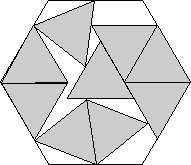
Found by David W. Cantrell
in May 2005.
Found by David W. Cantrell
in July 2012.
Found by Erich Friedman
in April 2005.
| 1. 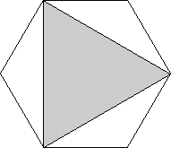 | 2. 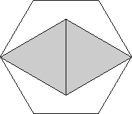 | 3. 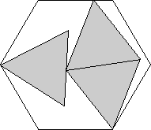 | ||
| s = 1/√3 = .577+ Trivial. | s = √3/2 = .866+ Trivial. | s = √((6+√33)/12) = .989+ Found by Erich Friedman in April 2005. |
| 4. 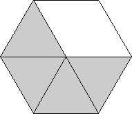 | 5. 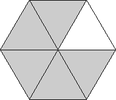 | 6. 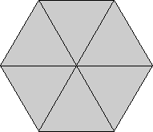 | ||
| s = 1 Trivial. | s = 1 Trivial. | s = 1 Trivial. |
| 7.
| 8. | 9. 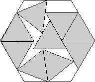 | ||
| s = 1.277+ Found by David W. Cantrell in May 2005. | s = 1.356+ Found by David W. Cantrell in July 2012. | s = 1.434+ Found by Erich Friedman in April 2005. |
| 10. 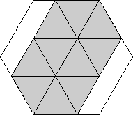 | 11. 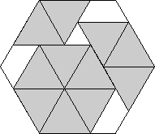 | 12. 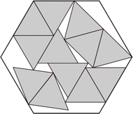 | ||
| s = 3/2 = 1.500 Found by Erich Friedman in April 2005. | s = 3/2 = 1.500 Found by Erich Friedman in April 2005. | s = 1.627+ Found by Maurizio Morandi in May 2008. |
| 13. 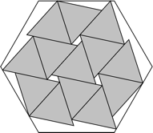 | 14. 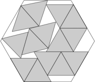 | 15. 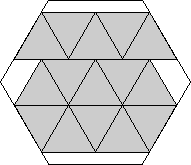 | ||
| s = 5/3 = 1.666+ Found by Erich Friedman in April 2005. | s = 1.725+ Found by DWC after MM in August 2012. | s = 7/4 = 1.750 Found by Erich Friedman in April 2005. |
| 16. 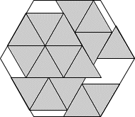 | 17. 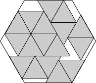 | 18. 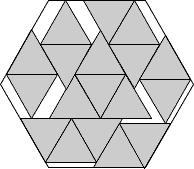 | ||
| s = 9/5 = 1.800 Found by Maurizio Morandi in April 2008. | s = 11/6 = 1.833+ Found by Maurizio Morandi in April 2008. | s = 17/9 = 1.888+ Found by Maurizio Morandi in April 2008. |